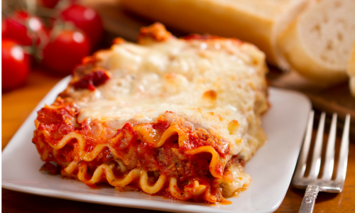

Lasagna
A beloved Italian dish, this hearty and comforting meal consists of several layers
of ingredients baked to perfection. The foundation of this dish is the lasagna
noodles, flat pasta sheets that form the structural base. Between these layers,
you'll find a rich and flavorful meat sauce, made with Italian sausage, ground beef,
garlic, onion, tomatoes, sugar, and various spices. This creates a deep,
savory flavor that's both robust and satisfying.
The meat sauce is complemented by a creamy cheese mixture, which contains
parmesan, mozzarella, and ricotta. The cheeses add a delightful creaminess and
sharp, tangy contrast to the meat sauce. Fresh parsley and dried basil are
added for their aromatic qualities, enhancing the overall taste profile of the dish
Ingredients
- 1 pound Italian Sausage
- 3/4 pound ground beef
- 1/2 cup minced onion
- 2 cloves garlic, crushed
- 1 (28 oz) can crushed tomatoes
- 2 (6.5 oz) cans canned tomato juice
- 2 (6 oz) cans tomato paste
- 1/2 cup water
- 2 Tbsp white sugar
- 4 Tbsp chopped fresh parsley, divided
- 1 1/2 tsp dried basil leaves
- 1 1.2 tsp salt, divided, or to taste
- 1 tsp Italian seasoning
- 1/2 tsp fennel seeds
- 1/2 tsp ground black pepper
- 12 lasagna noodles
- 16 oz ricotta cheese
- 1 egg
- 3/4 pound mozzarella cheese, sliced
- 3/4 cup grated Parmesan cheese
Directions
- Gather all your ingredients
- Preheat the oven to 375 degrees F (190 degrees C).
- Cook sausage, ground beef, onion, and garlic in a Dutch oven over
medium heat until well browned.
- Stir in crushed tomatoes, tomato sauce, tomato paste, and water.
Season with sugar, 2 Tbsp parsley, basil, 1 tsp salt, Italian
seasoning, fennel seeds, and pepper. Simmer, covered, for 1 1/2
hours, stirring occasionally.
- Bring a large pot of lightly salted water to a boil. Cook lasagna
noodles, and rinse with cold water.
- In a mixing bowl, combine ricotta cheese with egg, remaining parsley,
and remaining salt.
- To assemble, spread 1 cup of meat sauce in the bottom of a 9x13-inch
baking dish. Arrange 4 noodles lengthwise over meat sauce. Spread with
1/3 of the ricotta cheese mixture. Top with 1/3 of the mozzarella cheese
slices. Spoon 1 cup meat sauce over mozzarella, and sprinkle with 1/4
cup Parmesan cheese.
- Repeat layers, and top with remaining mozzarells and Parmesan cheese.
Cover with foil: to prevent sticking, either spray foil with cooking
spray or make sure the foil does not touch the cheese.
- Bake in the preheated oven for 25 minutes. Remove the foil and bake for
an additional 25 minutes.
- Rest lasagna for 15 minutes before serving